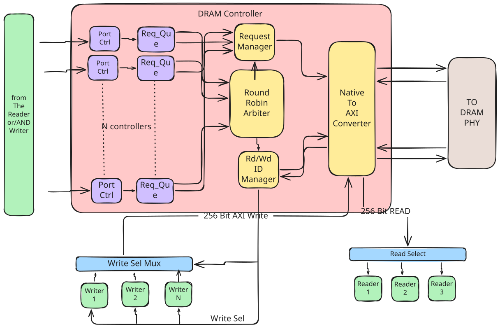

DRAM Controller¶
This document presents the architecture of Memory Controller with ‘N’ requestors and a ‘Round Robin Priority Arbiter’
{kind=link}

It comprises of ‘N’ ports wherein, each requestor is connected to a particular port based on the priority. Port 0 has highest priority whereas port ‘N’ has the least priority. Each port has controller and a queue associated with it, if it recieves a valid read/write request then it is forwarded to the queue and these requests are further forwarded to “Round Robin Arbiter”. Each request in the queue stores various fields such as, port-ID, Address, read/write, and burst-length. Native to AXI interface converts these requests to AXI signals to be applied to DDR.
Scheduling Mechanism:
At the start of every memory scheduling cycle, the queues are scanned and a request is processed in the order of the highest priority port first then the lower priority port. The requests that are issued at the ports are dispatched into queue, and if any queue has a valid request then the arbiter selects that request and issues a grant. If there are multiple requests from different queues then grant is issued in round robin fashion. If all the requests are processed or if queues are empty then priority of port 0 is reset to highest in next memory cycle.
The request that recieves a grant is further processed by “Request Manager” which forwards the address, burst-length and other signals to “Native to AXI interface” module to sent to DDR. Upon recieving the reponse from AXI interface, another request can be scheduled for the processing. To monitor the request that is being acknowledged and/or processed, there exists an “ID Manager” that issues select/ready/ack signals to the requestors for the data transfer.
If requestor issues a ‘read’ request then after recieving valid data from DDR, select signal is issued and then data is transferred to the blocks on 256-bit WRITE channel of the memory controller, whereas for a ‘write’ request, when it recieves a WREADY reponse from AXI then it issues an ‘ack’ signal to accept the data from the blocks to sent to DDR.
Round Robin Arbiter:
A Round Robin Arbiter with Priority is an arbitration scheme that allocates a shared resource among multiple requestors. Requestors are categorized into different priority levels based on predetermined criteria. In each memory cycle, the arbiter follows a round-robin sequence to grant access to requestors.
Note
For more details related to AXI interface and the signals, refer to AXI specification user guide. https://developer.arm.com/documentation/ihi0022/e/